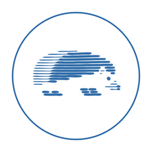

Kirpi AsistanBu özet bilgilendirme amaçlıdır; bağlayıcı olan, aşağıdaki metnin tamamıdır.
İşbu Gizlilik Politikası ve Aydınlatma Metni (“Metin”), Kirpi Asistan mobil uygulaması (“Uygulama”) ile kirpiasistan.com internet sitesi (“Site”; Uygulama ile birlikte “Hizmet”) aracılığıyla işlenen kişisel verilere ilişkin olarak, 6698 sayılı Kişisel Verilerin Korunması Kanunu (“KVKK”) m. 10 ve Aydınlatma Yükümlülüğünün Yerine Getirilmesinde Uyulacak Usul ve Esaslar Hakkında Tebliğ uyarınca ilgili kişileri bilgilendirmek amacıyla hazırlanmıştır. Hizmet’i kullanan tüm ilgili kişiler bu Metin kapsamındadır.
KVKK kapsamında veri sorumlusu, bireysel geliştirici Göktuğ Yağmur Gök’tür (“Veri Sorumlusu”).
İletişim: support@kirpiasistan.com · kirpiasistan.com
Uygulama’ya girdiğiniz kira sözleşmeleri; mal sahibi ve kiracılara ait ad, soyad, telefon numarası ve adres bilgileri; kira bedelleri, tarihler, notlar, belgeler ve fotoğraflar yalnızca cihazınızda saklanır ve Veri Sorumlusu’na iletilmez. Sözleşme tarama özelliği görüntüleri cihaz üzerinde işler; görüntüler ve okunan metin herhangi bir sunucuya gönderilmez. Bu verilere ilişkin olarak, söz konusu kişilerin verilerini kendi mesleki faaliyetiniz kapsamında işlemenizden doğan KVKK yükümlülükleri tarafınıza aittir.
Kişisel verileriniz; Uygulama ve Site üzerinden, üçüncü taraf kimlik doğrulama hizmetleri (Google, Apple veya e-posta doğrulaması) aracılığıyla ve Uygulama’nın kullanımı sırasında kısmen otomatik yollarla, elektronik ortamda toplanmaktadır. Kişisel verileriniz KVKK m. 5 ve m. 6’da belirtilen aşağıdaki hukuki sebeplere dayanılarak işlenmektedir:
Kişisel verileriniz, 6. maddede belirtilen amaçlarla ve KVKK m. 8 ve m. 9’da öngörülen şartlara uygun olarak; Hizmet’in sunulabilmesi için hizmet alınan bulut altyapısı, veri barındırma, kimlik doğrulama, e-posta gönderimi ve analiz hizmeti sağlayıcılarına, Uygulama’nın dağıtımı ve ücretli hizmetlerin satın alınması için uygulama dağıtım platformlarına ve kanunen yetkili kamu kurum ve kuruluşları ile yargı mercilerine aktarılabilir.
Hizmet sağlayıcılarımızın sunucuları ağırlıklı olarak Avrupa Birliği’nde ve diğer yurt dışı ülkelerde bulunduğundan, kişisel verileriniz yurt dışına aktarılmaktadır. Yurt dışına aktarım, KVKK m. 9 ve ilgili ikincil mevzuat kapsamında öngörülen uygun güvencelerden birine dayanılarak ve gerekli hâllerde açık rızanız alınarak gerçekleştirilir. Kişisel verileriniz üçüncü kişilere satılmaz ve reklam amacıyla paylaşılmaz.
Kişisel verileriniz, işlenme amaçlarının gerektirdiği süre boyunca ve aşağıdaki sürelerle sınırlı olarak saklanır:
Sürenin sona ermesi veya işleme sebeplerinin ortadan kalkması hâlinde kişisel verileriniz, Kişisel Verilerin Silinmesi, Yok Edilmesi veya Anonim Hâle Getirilmesi Hakkında Yönetmelik uyarınca silinir, yok edilir veya anonim hâle getirilir. Cihazınızda tutulan veriler, Uygulama’yı silmeniz veya Uygulama içindeki silme işlemlerini kullanmanız hâlinde cihazınızdan kaldırılır.
Veri Sorumlusu, KVKK m. 12 uyarınca kişisel verilerin hukuka aykırı olarak işlenmesini ve bunlara hukuka aykırı olarak erişilmesini önlemek ve verilerin muhafazasını sağlamak amacıyla uygun güvenlik düzeyini temin etmeye yönelik gerekli teknik ve idari tedbirleri almaktadır. Bu kapsamda veri iletiminde şifreli bağlantılar kullanılmakta, erişim yetkilendirme ve kimlik doğrulama mekanizmaları uygulanmakta, veri minimizasyonu ilkesi gözetilmekte ve hassas içerikler mümkün olan durumlarda yalnızca cihaz üzerinde işlenmektedir. İşlenen kişisel verilerin kanuni olmayan yollarla başkaları tarafından elde edilmesi hâlinde, bu durum en kısa sürede ilgilisine ve Kurul’a bildirilir.
Uygulama; belge ve fotoğraf eklenmesi için kamera ve fotoğraf arşivine, yenileme tarihlerinin takvime eklenmesi için takvime, hatırlatmalar için bildirimlere ve ana sayfada günün hava durumunu göstermek için yaklaşık konuma erişim izni isteyebilir. Konum yalnızca uygulama açıkken ve yaklaşık (yaklaşık 1 km hassasiyetle) kullanılır; hava durumu sorgusu için yuvarlanmış koordinatlar, kimliğinizle ilişkilendirilmeksizin bir hava durumu hizmet sağlayıcısına iletilir. Konum tarafımızca saklanmaz veya kaydedilmez. Bu izinler isteğe bağlıdır; verilmemeleri hâlinde yalnızca ilgili özellik kullanılamaz. İzinlerinizi dilediğiniz zaman cihaz ayarlarınızdan değiştirebilirsiniz.
Ücretli abonelikler App Store veya Google Play üzerinden satın alınır ve ödeme işlemleri bu platformların kendi koşulları ve gizlilik politikaları çerçevesinde yürütülür. Ödeme kartı bilgileriniz Veri Sorumlusu’na iletilmez.
Uygulama’daki Ayarlar → Hesabı sil adımı cihazınızdaki Uygulama verilerini siler ve oturumunuzu kapatır. Hesabınıza ilişkin kayıtların tamamen silinmesini support@kirpiasistan.com adresine hesabınıza bağlı e-posta adresinizden göndereceğiniz bir talep ile isteyebilirsiniz; talebiniz en geç 30 gün içinde sonuçlandırılır.
Hizmet, emlak profesyonelleri ve mülk sahipleri için tasarlanmıştır ve 18 yaşından küçüklere yönelik değildir. 18 yaşından küçüklere ait kişisel verileri bilerek işlemeyiz.
KVKK m. 11 uyarınca Veri Sorumlusu’na başvurarak;
haklarına sahipsiniz.
Yukarıda sayılan haklarınıza ilişkin taleplerinizi, Veri Sorumlusuna Başvuru Usul ve Esasları Hakkında Tebliğ’e uygun olarak, Hizmet’e kayıtlı e-posta adresinizden support@kirpiasistan.com adresine iletebilirsiniz. Başvurunuzda; adınız, soyadınız, (Türk vatandaşları için) T.C. kimlik numaranız, (yabancılar için) uyruğunuz ve pasaport numaranız, tebligata esas adresiniz veya e-posta adresiniz ile talep konunuzun bulunması gerekmektedir.
Başvurunuz, talebin niteliğine göre en kısa sürede ve en geç 30 (otuz) gün içinde ücretsiz olarak sonuçlandırılır. İşlemin ayrıca bir maliyet gerektirmesi hâlinde, Kurul tarafından belirlenen tarifedeki ücret talep edilebilir. Başvurunuzun reddedilmesi, verilen cevabın yetersiz bulunması veya süresinde cevap verilmemesi hâlinde, KVKK m. 14 uyarınca cevabı öğrendiğiniz tarihten itibaren 30 gün ve her hâlde başvuru tarihinden itibaren 60 gün içinde Kurul’a şikâyette bulunabilirsiniz.
Hizmet, üçüncü taraflara ait hizmetlere (ör. giriş sağlayıcıları, uygulama mağazaları) veya internet sitelerine bağlantılar içerebilir. Bu üçüncü tarafların gizlilik uygulamalarından Veri Sorumlusu sorumlu değildir; ilgili hizmetlerin gizlilik politikalarını incelemenizi öneririz.
Bu Metin, mevzuattaki değişiklikler veya Hizmet’te yapılan güncellemeler doğrultusunda değiştirilebilir. Güncel sürüm her zaman bu sayfada yayımlanır; önemli değişiklikler Uygulama içinde veya bu sayfada duyurulur. Değişikliklerden sonra Hizmet’i kullanmaya devam etmeniz, güncel Metin’in tarafınıza bildirildiği anlamına gelir.
Bu Metin ile ilgili her türlü soru ve talebiniz için: support@kirpiasistan.com
This summary is for information only; the full text below is binding.
This Privacy Policy and Notice (the “Notice”) is issued pursuant to Article 10 of Turkey’s Law No. 6698 on the Protection of Personal Data (“KVKK”) and the related Communiqué on the Obligation to Inform, in respect of personal data processed through the Kirpi Asistan mobile application (the “App”) and the kirpiasistan.com website (the “Site”; together, the “Service”). It applies to everyone who uses the Service.
Personal data means any information relating to an identified or identifiable natural person; data subject means the person whose personal data is processed; processing means any operation performed on personal data; data controller means the person who determines the purposes and means of processing; data processor means a person who processes personal data on the controller’s behalf; the Board means Turkey’s Personal Data Protection Board.
The data controller is the individual developer Göktuğ Yağmur Gök (the “Controller”). Contact: support@kirpiasistan.com · kirpiasistan.com
Rental contracts you enter in the App — including names, phone numbers and addresses of landlords and tenants, rents, dates, notes, documents and photos — are stored only on your device and are not transmitted to the Controller. Contract scanning processes images on the device; images and recognised text are not sent to any server. You are responsible under the KVKK for processing such third parties’ data in the course of your own professional activity.
Personal data is collected electronically through the App and the Site, through third-party authentication services (Google, Apple or email verification) and partly by automated means while you use the App. It is processed on the following legal grounds under Articles 5 and 6 of the KVKK: performance of a contract (Art. 5/2-c) for account creation, authentication, membership and subscriptions; compliance with legal obligations (Art. 5/2-ç); establishment, exercise or protection of a right (Art. 5/2-e); the Controller’s legitimate interests, provided your fundamental rights and freedoms are not harmed (Art. 5/2-f), for improving the Service, statistical analysis and information security; and your explicit consent (Art. 5/1) for launch notifications requested through the Site.
For the purposes above and in accordance with Articles 8 and 9 of the KVKK, personal data may be transferred to cloud infrastructure, hosting, authentication, email delivery and analytics service providers used to provide the Service, to app distribution platforms for distribution and in-app purchases, and to competent public authorities and courts where required by law. As our service providers’ servers are located mainly in the European Union and other countries outside Turkey, personal data is transferred abroad on the basis of one of the appropriate safeguards provided for in Article 9 of the KVKK and its secondary legislation, and with your explicit consent where required. Personal data is not sold to third parties or shared for advertising purposes.
Personal data is kept only as long as necessary for its purposes: account data until the account is deleted (within 30 days of a deletion request); technical and usage data for up to 7 years; Site sign-up data for up to 6 months after the launch announcement; and longer where required by law. Afterwards it is deleted, destroyed or anonymised in accordance with the applicable regulation. Data on your device is removed when you delete the App or use the in-app deletion functions.
Pursuant to Article 12 of the KVKK, the Controller takes appropriate technical and organisational measures to prevent unlawful processing of and access to personal data and to safeguard it, including encrypted connections, access authorisation and authentication controls, data minimisation and, where possible, processing sensitive content only on the device. If personal data is obtained by others unlawfully, the data subjects and the Board will be notified as soon as possible.
The App may request access to the camera and photo library (to add documents and photos), the calendar (to add renewal dates), notifications (for reminders) and approximate location (to show today’s weather on the home screen). Location is used only while the App is open and only approximately (about 1 km); for the weather lookup, rounded coordinates are sent to a weather service provider without being linked to your identity. We do not store or record your location. These permissions are optional; if declined, only the related feature is unavailable. You can change them at any time in your device settings.
Paid subscriptions are purchased through the App Store or Google Play, and payments are handled under those platforms’ own terms and privacy policies. Your payment card details are not transmitted to the Controller.
In the App, Settings → Delete account erases the App data on your device and signs you out. To have all records relating to your account deleted, email support@kirpiasistan.com from the address linked to your account; requests are completed within 30 days.
The Service is designed for real-estate professionals and property owners and is not directed at persons under 18. We do not knowingly process personal data of persons under 18.
Under Article 11 of the KVKK you have the right to: learn whether your personal data is processed; request information about it; learn the purpose of processing and whether data is used accordingly; know the third parties to whom it is transferred in Turkey or abroad; request correction of incomplete or inaccurate data; request deletion or destruction under Article 7; request notification of such correction or deletion to third parties to whom the data was transferred; object to a result to your detriment arising solely from automated analysis; and claim compensation for damage caused by unlawful processing.
You may submit requests from the email address registered with the Service to support@kirpiasistan.com, in accordance with the Communiqué on the Principles and Procedures for Requests to the Data Controller. Your request should include your name, surname, Turkish ID number (or, for foreign nationals, nationality and passport number), address or email for notifications, and the subject of your request. Requests are concluded free of charge as soon as possible and within 30 days at the latest; if the action requires an additional cost, the fee set by the Board may be charged. If your request is rejected, the answer is insufficient, or no answer is given in time, you may file a complaint with the Board under Article 14 of the KVKK within 30 days of learning the answer and in any case within 60 days of the request.
The Service may include third-party services (such as sign-in providers and app stores) or links to third-party websites. The Controller is not responsible for their privacy practices; please review their privacy policies.
This Notice may be amended to reflect changes in legislation or in the Service. The current version is always published on this page, and significant changes are announced in the App or on this page.
For any questions or requests about this Notice: support@kirpiasistan.com